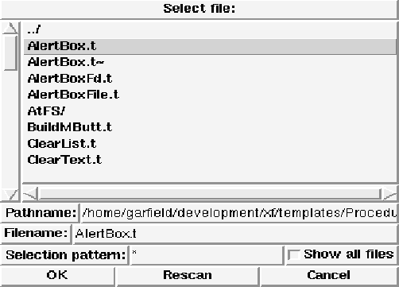
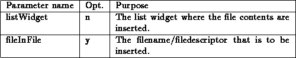
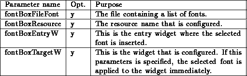
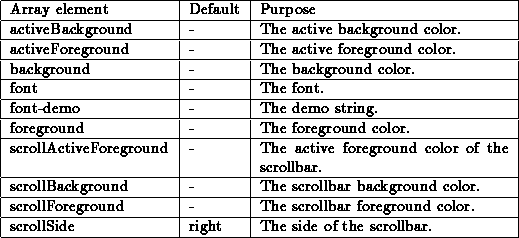
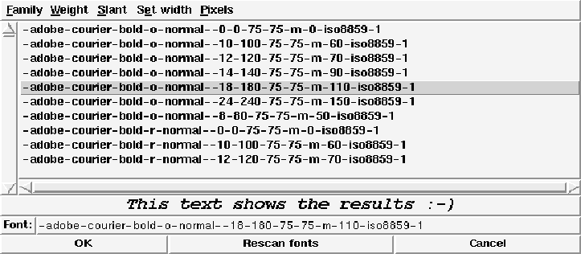
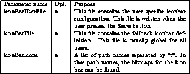
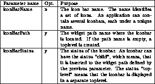

This template defines a new feature that supports user changeable icon bars. The usage of this feature is more complex than it is for most other templates. An iconbar can be part of your toplevel, or it can use its own toplevel. To switch between both modes, each iconbar has an icon at the right side that toggles between both modes. The icon left from this toggle icon pages through the different iconbar lines. An iconbar contains lines that are separated by a separator. Your code must contain a frame definition. By calling the procedure IconBarInit, the iconbar is initialized. The procedure takes the following parameters:

This will load and initialize the iconbar. To actually display the iconbar you have to call the procedure IconBarShow. This procedure creates the iconbar. The procedure gets the following parameters:

To remove a displayed iconbar, you can call the procedure IconBarRemove. The procedure gets the following parameters:

To modify an existing iconbar, the procedure IconBarConf is called. This pops up a dialog box where bitmaps can be combined with procedure calls, and added to the iconbar. The procedure gets the following parameters:

To configure the different aspects of the iconbar, there exists a global array named iconBar. A default value of ``-'' means that the Tk default value is used. This array contains elements that control the iconbar (color, font etc.):
Array element & Default & Purpose

A small example of an initialization may look like this:
IconBarInit /.local-iconbar /usr/local/lib/global-iconbar
/usr/local/lib/icons
IconBarShow default .frame
frame .myIconBar
This would create the following dialog box:

Figure: The template IconBar (initialization)
A small example of an invocation of the configuration may look like this:
IconBarConf default .frame {Proc1 Proc2 Proc3}
This would create the following dialog box:

Figure: The template IconBar (configuration)